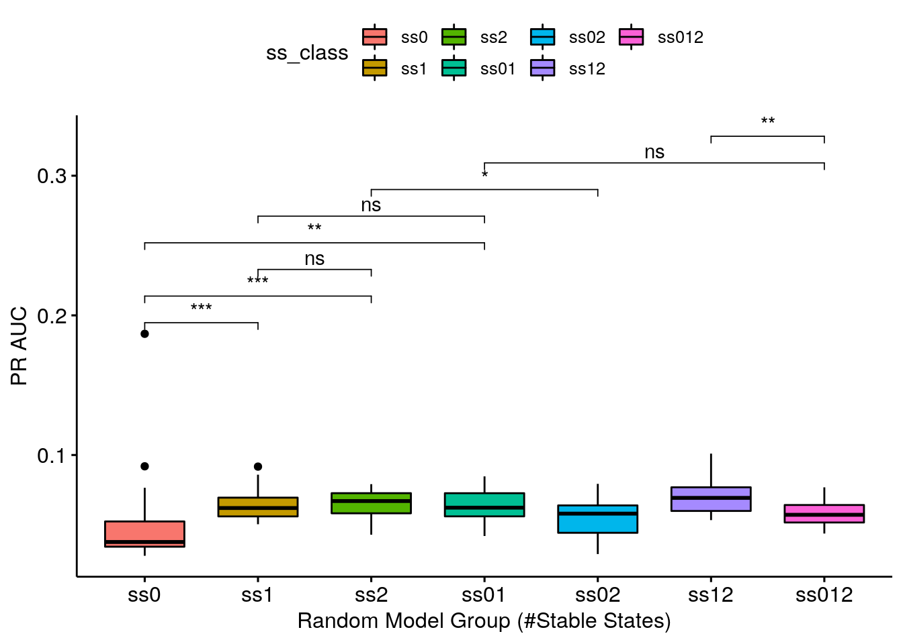
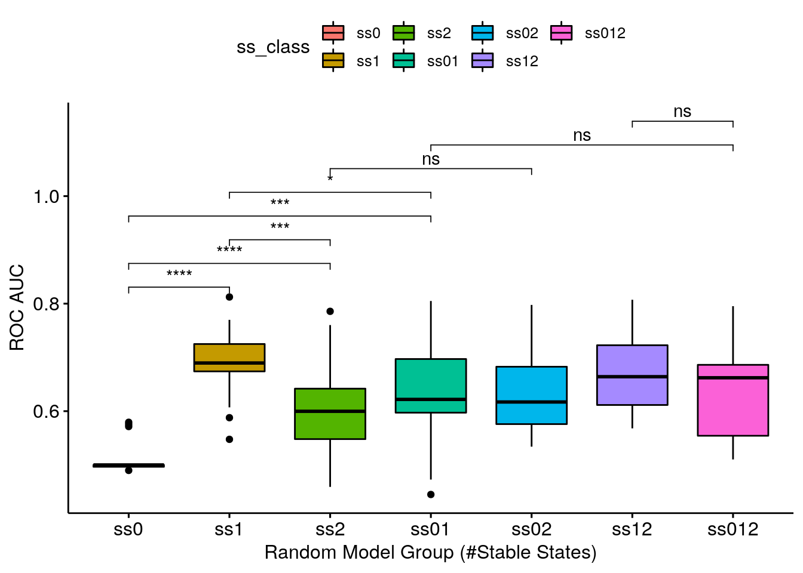
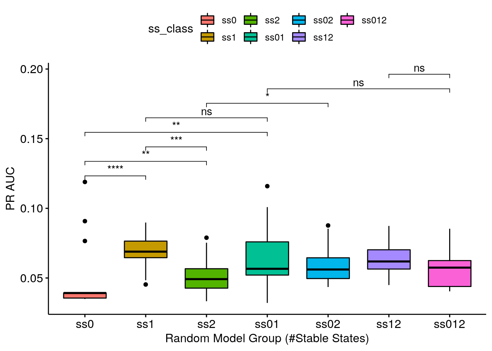

Random model predictions (CASCADE 2.0) vs Number of Stable States
Last updated: 19 December, 2020
Intro
Main question: is there a relation between random models stable state number and their performance as measured by AUC PR (Precision-Recall) or AUC ROC (Receiver Operating Characteristic)?
This investigation can be considered as an extension of the random model ROC and PR curves (for CASCADE 2.0, link operator mutations) I created for the AGS paper (see version tagged v1.0 which included the abmlog-generated random model analysis here).
In that analysis, I generated a \(3000\) random model sample, and took only the models that had 1 stable state to compute their ROC performance.
So maybe I needed to generate more models or bootstrap (re-sample) these models to get a better picture of what is going on and that’s what I am trying to do here :)
Input
The random link-operator mutated models were generated from the CASCADE 2.0 topology, using the abmlog software, version 1.6.0.
Their prediction performance was assessed by the Drabme software module, via the druglogics-synergy Java module, version 1.2.0.
I run the following command to get the random models from the abmlog repo root (took ~165 min to generate all \(50000\) models):
java -cp target/abmlog-1.6.0-jar-with-dependencies.jar eu.druglogics.abmlog.RandomBooleanModelGenerator --file=test/cascade_2_0.sif --num=50000I splitted the models to 3 groups: those that have no 1 stable state, 2 stable states or none at all.
There was only 1 model in \(50000\) (cascade_2_0_418669279901714.gitsbe) that had 3 stable states and so we will not take into account models with more than 2 stable states (very rare and almost impossible to be chosen via Gitsbe since it indirectly penalizes models with more than 1 attractors).
The distribution of models in each category were (use the count_ss.sh script):
| #Stable states | #Models | Percentage |
|---|---|---|
| 0 | 29027 | 58% |
| 1 | 20672 | 41% |
| 2 | 300 | 1% |
| 3 | 1 | less than 0.01% |
From the ags_cascade_2.0 directory of the druglogics-synergy module I ran the run.sh script.
This script bootstraps \(50\) models (\(20\) times in total) from each category and runs the Drabme with those.
So bootstrapping \(50\) models \(\times \text{ }20\) times with 0 stable states, \(50\) models \(\times \text{ }20\) times with 1 stable state, etc.
We also try all pair-wise combinations: {(\(25\) models with 0 stable states) + (\(25\) models with 1 stable state)} \(\times\text{ }20\) times, etc.
Lastly, we merge all of the different stable state models together in a pool of \(25\times3=75\) models (again bootstrapping \(20\) such samples).
The generated random models and the results of the Drabme simulations are stored in

Libraries
Analysis
Note that data_dir in the next code-block is the directory where you uncompress the Zenodo dataset file (tar -xzvf boot_random_ss.tar.gz).
The ss_class denotes the model group.
E.g. ss0 is the group with models with zero stable state, ss12 is the group with half the models having 1 stable state and half of the others having 2 stable states, etc.
observed_synergies_file = "data/observed_synergies_cascade_2.0"
observed_synergies = emba::get_observed_synergies(observed_synergies_file)
data_dir = "/home/john/tmp/ags_paper_res/link-only/hsa/bootstrap_random_ss"
res_dirs = list.files(data_dir, full.names = TRUE)
data_list = list()
index = 1
for (dir in res_dirs) {
if (stringr::str_detect(string = dir, pattern = "cascade_2.0_random_hsa_ss")) {
# How many stable states the models had?
ss_class = str_match(string = dir, pattern = "_(ss\\d+)_")[1,2]
# Get the ensemble-wise synergies
ew_syn_file = list.files(path = dir, pattern = "_ensemblewise_synergies.tab", full.names = TRUE)
ew_synergies = emba::get_synergy_scores(ew_syn_file)
observed = sapply(ew_synergies$perturbation %in% observed_synergies, as.integer)
# ROC AUC (Ensemble-wise)
ew_roc = roc.curve(scores.class0 = ew_synergies %>% pull(score) %>% (function(x) {-x}),
weights.class0 = observed)
ew_roc_auc = ew_roc$auc
# PR AUC (Ensemble-wise)
ew_pr = pr.curve(scores.class0 = ew_synergies %>% pull(score) %>% (function(x) {-x}),
weights.class0 = observed)
ew_pr_auc = ew_pr$auc.davis.goadrich
# Get the model-wise synergies
mw_syn_file = list.files(path = dir, pattern = "_modelwise_synergies.tab", full.names = TRUE)
mw_synergies = emba::get_synergy_scores(mw_syn_file, file_type = "modelwise")
mw_synergies = mw_synergies %>%
mutate(synergy_prob = case_when(
synergies == 0 & `non-synergies` == 0 ~ 0,
TRUE ~ synergies/(synergies + `non-synergies`)))
# ROC AUC (Model-wise)
mw_roc = roc.curve(scores.class0 = mw_synergies %>% pull(synergy_prob), weights.class0 = observed)
mw_roc_auc = mw_roc$auc
# PR AUC (Model-wise)
mw_pr = pr.curve(scores.class0 = mw_synergies %>% pull(synergy_prob), weights.class0 = observed)
mw_pr_auc = mw_pr$auc.davis.goadrich
# Merge results
data_list[[index]] = dplyr::bind_cols(ss_class = ss_class,
roc_auc = ew_roc_auc, pr_auc = ew_pr_auc, method = "ensemble-wise")
index = index + 1
data_list[[index]] = dplyr::bind_cols(ss_class = ss_class,
roc_auc = mw_roc_auc, pr_auc = mw_pr_auc, method = "model-wise")
index = index + 1
}
}
res = dplyr::bind_rows(data_list)
saveRDS(res, file = "data/res.rds")We will just load the result for efficiency:
Ensemble-wise Synergies
my_comparisons = list(c("ss0", "ss1"), c("ss0", "ss2"), c("ss1", "ss2"),
c("ss0", "ss01"), c("ss1", "ss01"), c("ss2", "ss02"), c("ss01", "ss012"), c("ss12", "ss012"))
ggboxplot(data = res %>% filter(method == "ensemble-wise"),
x = "ss_class", y = "roc_auc", fill = "ss_class",
xlab = "Random Model Group (#Stable States)", ylab = "ROC AUC",
order = c("ss0", "ss1", "ss2", "ss01", "ss02", "ss12", "ss012")) +
stat_compare_means(comparisons = my_comparisons, method = "wilcox.test", label = "p.signif")
ggboxplot(data = res %>% filter(method == "ensemble-wise"),
x = "ss_class", y = "pr_auc", fill = "ss_class",
xlab = "Random Model Group (#Stable States)", ylab = "PR AUC",
order = c("ss0", "ss1", "ss2", "ss01", "ss02", "ss12", "ss012")) +
stat_compare_means(comparisons = my_comparisons, method = "wilcox.test", label = "p.signif")
- ROC AUC results are somewhat analogous to the PR AUC results
- Getting a complete random sample of models with 1 stable state is enough to give you a valid ROC AUC (average AUC: 0.659212) - the ss1 group is one of the highest-performing groups
- Getting a decent random sample (keeping true to the models proportions as seeing in the table above) means being close to what the class ss01 represents. The class ss01 is 50-50 and a genuine decent random sample would be ~60-40 (60% models with 0 stable states and 40% models with 1 stable state), but we see that the 0 stable state models do not add AUC points (if I am allowed such terminology :) to any group that they are combined with!
- Continuing, the ss01 group is indistiguisable performance-wise from the ss1 group - meaning that using just the \(1\) stable state models as a random sample for this topology (CASCADE 2.0) is a good enough choice!
Model-wise Synergies
ggboxplot(data = res %>% filter(method == "model-wise"),
x = "ss_class", y = "roc_auc", fill = "ss_class",
xlab = "Random Model Group (#Stable States)", ylab = "ROC AUC",
order = c("ss0", "ss1", "ss2", "ss01", "ss02", "ss12", "ss012")) +
stat_compare_means(comparisons = my_comparisons, method = "wilcox.test", label = "p.signif")
ggboxplot(data = res %>% filter(method == "model-wise"),
x = "ss_class", y = "pr_auc", fill = "ss_class",
xlab = "Random Model Group (#Stable States)", ylab = "PR AUC",
order = c("ss0", "ss1", "ss2", "ss01", "ss02", "ss12", "ss012")) +
stat_compare_means(comparisons = my_comparisons, method = "wilcox.test", label = "p.signif")
- Same results as above. Note that the model-wise methodology (used to calculate the synergy scores) seems to be more granular: it’s easier to distinguish the different categories performance using this methodology.
R session info
R version 3.6.3 (2020-02-29)
Platform: x86_64-pc-linux-gnu (64-bit)
Running under: Ubuntu 20.04.1 LTS
Locale:
LC_CTYPE=en_US.UTF-8 LC_NUMERIC=C
LC_TIME=en_US.UTF-8 LC_COLLATE=en_US.UTF-8
LC_MONETARY=en_US.UTF-8 LC_MESSAGES=en_US.UTF-8
LC_PAPER=en_US.UTF-8 LC_NAME=C
LC_ADDRESS=C LC_TELEPHONE=C
LC_MEASUREMENT=en_US.UTF-8 LC_IDENTIFICATION=C
Package version:
abind_1.4-5 assertthat_0.2.1 backports_1.2.1
base64enc_0.1.3 BH_1.72.0.3 bookdown_0.21
boot_1.3.25 brio_1.1.0 broom_0.7.3
callr_3.5.1 car_3.0-10 carData_3.0-4
cellranger_1.1.0 Ckmeans.1d.dp_4.3.3 cli_2.2.0
clipr_0.7.1 colorspace_2.0-0 compiler_3.6.3
conquer_1.0.2 corrplot_0.84 cowplot_1.1.0
cpp11_0.2.4 crayon_1.3.4 curl_4.3
data.table_1.13.4 desc_1.2.0 diffobj_0.3.2
digest_0.6.27 dplyr_1.0.2 ellipsis_0.3.1
emba_0.1.8 evaluate_0.14 fansi_0.4.1
farver_2.0.3 forcats_0.5.0 foreign_0.8-75
gbRd_0.4-11 generics_0.1.0 ggplot2_3.3.2
ggpubr_0.4.0 ggrepel_0.9.0 ggsci_2.9
ggsignif_0.6.0 glue_1.4.2 graphics_3.6.3
grDevices_3.6.3 grid_3.6.3 gridExtra_2.3
gtable_0.3.0 haven_2.3.1 highr_0.8
hms_0.5.3 htmltools_0.5.0 htmlwidgets_1.5.3
igraph_1.2.6 isoband_0.2.3 jsonlite_1.7.2
knitr_1.30 labeling_0.4.2 lattice_0.20.41
lifecycle_0.2.0 lme4_1.1.26 magrittr_2.0.1
maptools_1.0.2 markdown_1.1 MASS_7.3.53
Matrix_1.2.18 MatrixModels_0.4.1 matrixStats_0.57.0
methods_3.6.3 mgcv_1.8.33 mime_0.9
minqa_1.2.4 munsell_0.5.0 nlme_3.1.151
nloptr_1.2.2.2 nnet_7.3.14 openxlsx_4.2.3
parallel_3.6.3 pbkrtest_0.4.8.6 pillar_1.4.7
pkgbuild_1.2.0 pkgconfig_2.0.3 pkgload_1.1.0
polynom_1.4.0 praise_1.0.0 prettyunits_1.1.1
processx_3.4.5 progress_1.2.2 PRROC_1.3.1
ps_1.5.0 purrr_0.3.4 quantreg_5.75
R6_2.5.0 rbibutils_2.0 RColorBrewer_1.1.2
Rcpp_1.0.5 RcppArmadillo_0.10.1.2.0 RcppEigen_0.3.3.7.0
Rdpack_2.1 readr_1.4.0 readxl_1.3.1
rematch_1.0.1 rematch2_2.1.2 rio_0.5.16
rje_1.10.16 rlang_0.4.9 rmarkdown_2.6
rprojroot_2.0.2 rstatix_0.6.0 rstudioapi_0.13
scales_1.1.1 sp_1.4.4 SparseM_1.78
splines_3.6.3 statmod_1.4.35 stats_3.6.3
stringi_1.5.3 stringr_1.4.0 testthat_3.0.0
tibble_3.0.4 tidyr_1.1.2 tidyselect_1.1.0
tinytex_0.28 tools_3.6.3 usefun_0.4.8
utf8_1.1.4 utils_3.6.3 vctrs_0.3.5
viridisLite_0.3.0 visNetwork_2.0.9 waldo_0.2.3
withr_2.3.0 xfun_0.19 yaml_2.2.1
zip_2.1.1